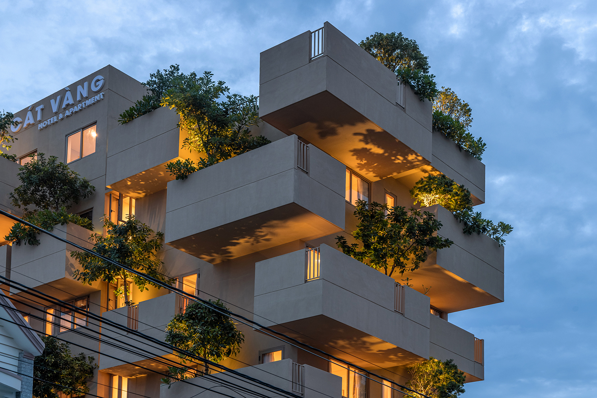

FORM & MASS / STUDY 001
An angled dialogue.

Nếp Architects / RESEARCH SHEETN-001
01 / 03
THE OBSERVATION
Deep balconies project from the building in alternating layers. Trees and warm interior light soften the solid edges, opening small gardens above the street.
- Inquiry
- Intersection
- Material language
- Solid planes / glass / planting
- Format
- Visual research